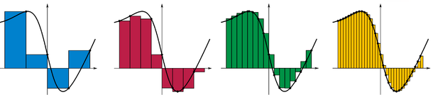

Región Diferencial y Límites de Integración
REGIÓN DIFERENCIAL
En palabras básicas consideramos como región diferencial a un rectángulo inscrito y/o circunscrito en el plano de rotación. El plano se fragmenta en infinitos rectángulos, mientras mayor número de ellos el cálculo del volumen es más aproximado al real y por el concepto de integral definida cuando el ancho de este rectángulo Delta X tiende a cero se obtiene el valor exacto.

https://upload.wikimedia.org/wikipedia/commons/thumb/2/2a/Riemann_sum_convergence.png/300px-Riemann_sum_convergence.png
Como observaremos en la siguiente sección, este ancho denominado inicialmente como Delta X, corresponde a la altura del disco, arandela o cascarón cilíndrico que se forma al girar la región al rededor del eje de rotación.
LIMITES DE INTEGRACIÓN
Para establecer los límites primero establecemos si el diferencial está de forma horizontal o vertical. Segundo debemos realizar de forma gráfica o mental el "barrido del diferencial", esto quiere decir, visualizar todos los posibles diferenciales que rellenen el plano de rotación. Si está de forma vertical definimos el intervalo para x que abarca todos los diferenciales, en cambio si está de forma horizontal definimos intervalo para y.
{kind=link}
{kind=link}
{kind=link}